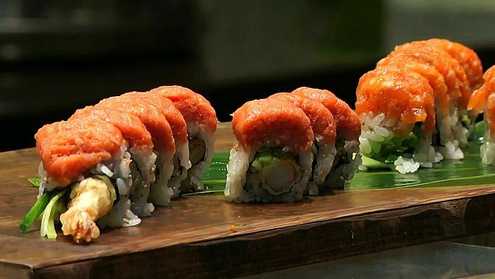
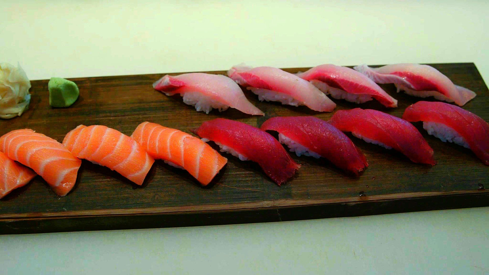
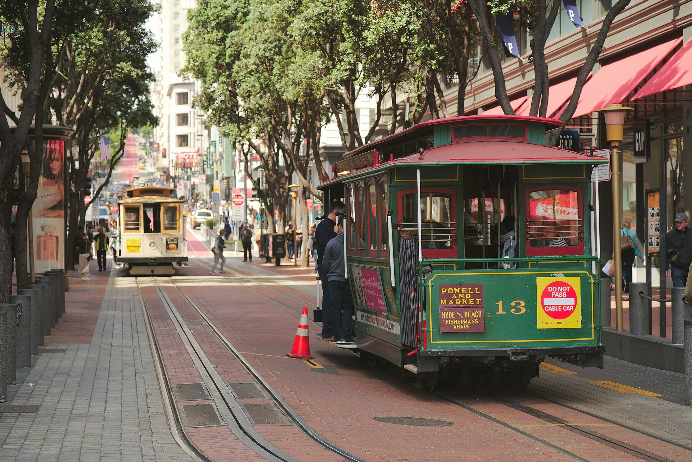
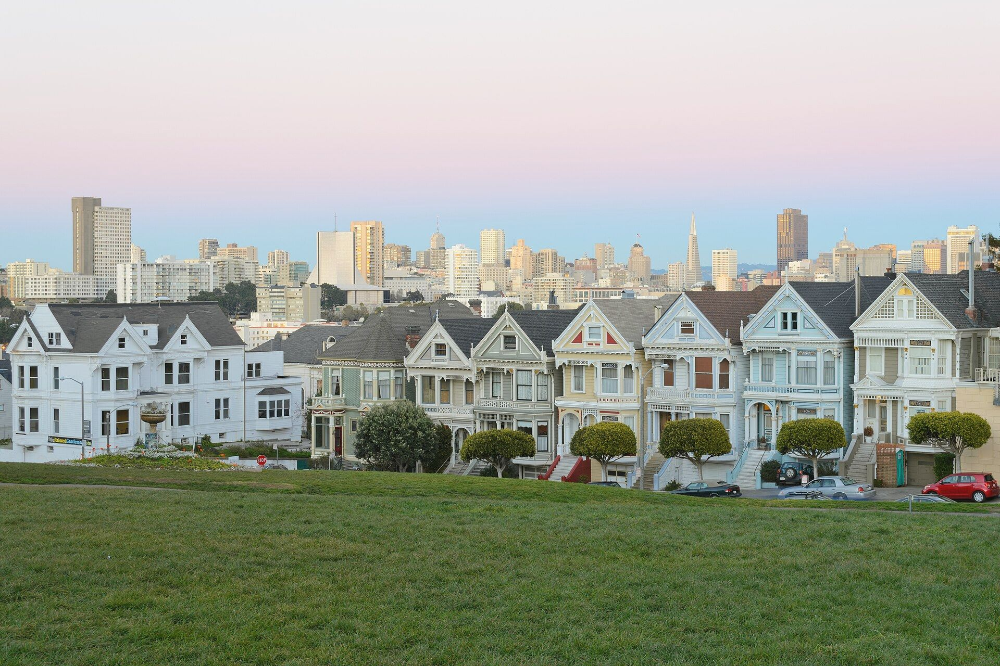
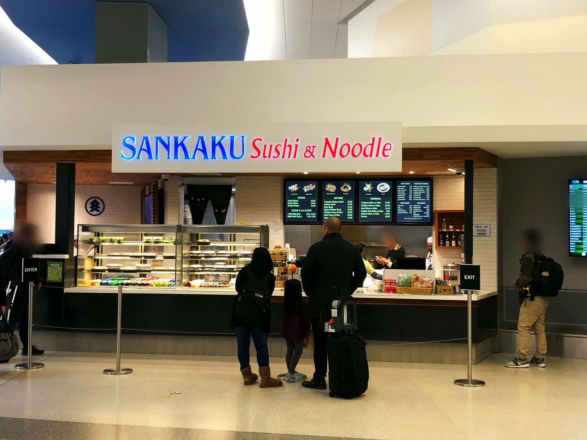
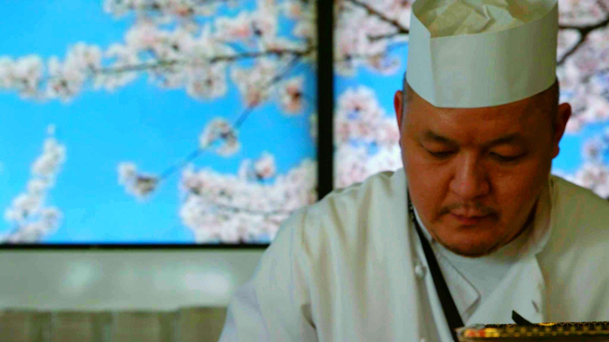
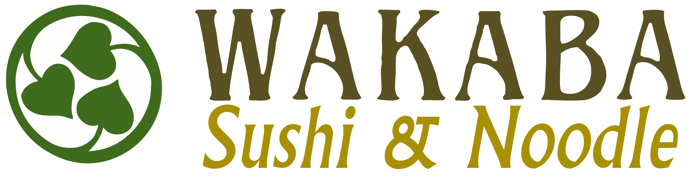

Extra
Our Story

Our Story (sanraku02)▶ 0:00
A short film from our family restaurant. The people, the counter and the food behind every plate.
Video placeholder: sanraku02.mp4. The footage shows our Sanraku restaurant.
Sushi, ramen and rice bowls, steps from Gate E2. Real Japanese food for travelers on the way in or on the way out.


Flights get delayed. Dinner shouldn’t. Our most-loved dishes, boarding now.

Sushi DeluxeGate codes are decorative. Prices from the 2020 printed menu, to be confirmed. Food footage was shot in our sister restaurant’s kitchen (Wakaba): swap in Sankaku photos when available.
 30 min
30 minBoarding soon? A bento box or rice bowl to eat at the gate.
 1 hour
1 hourEnough time for a hot bowl of noodles. Take it slow.
 Delayed
DelayedFlight pushed back? Sushi platter, a cold beer or a little sake.
Long layover? The city is just outside: cable cars, painted houses, fog and a very good bridge. Come back hungry.

Ride a rolling landmark, then come back for ramen.

Alamo Square’s famous row of houses, with the skyline behind.




Many visitors to SFO are seeking authentic Japanese food. We are proud to offer the highest quality Japanese food for travelers as they make their way through SFO.Kimiko Hattori, ownerwith her son Hiroyuki Hattori · quote adapted from flysfo.com, confirm wording and permission

A short film from our family restaurant. The people, the counter and the food behind every plate.
Video placeholder: sanraku02.mp4. The footage shows our Sanraku restaurant.
